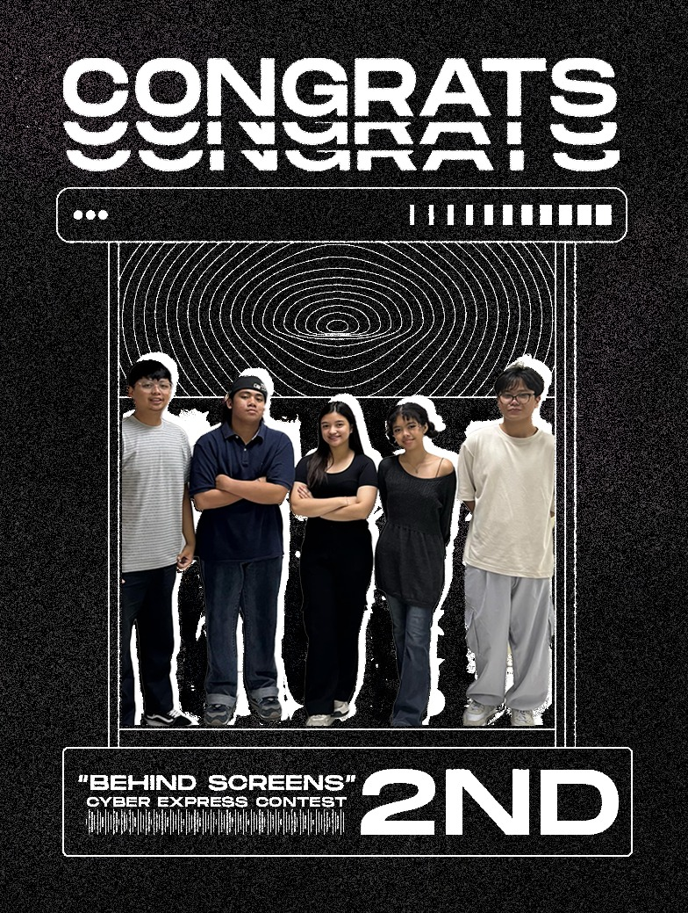

Victory Alert: Behind Screens Triumphs
Date: January 2024
Holy Angel University's School of Computing proudly celebrates a remarkable achievement as our team secured 2nd Place in the Cyber Express Video Making Contest - Inter-School Edition.